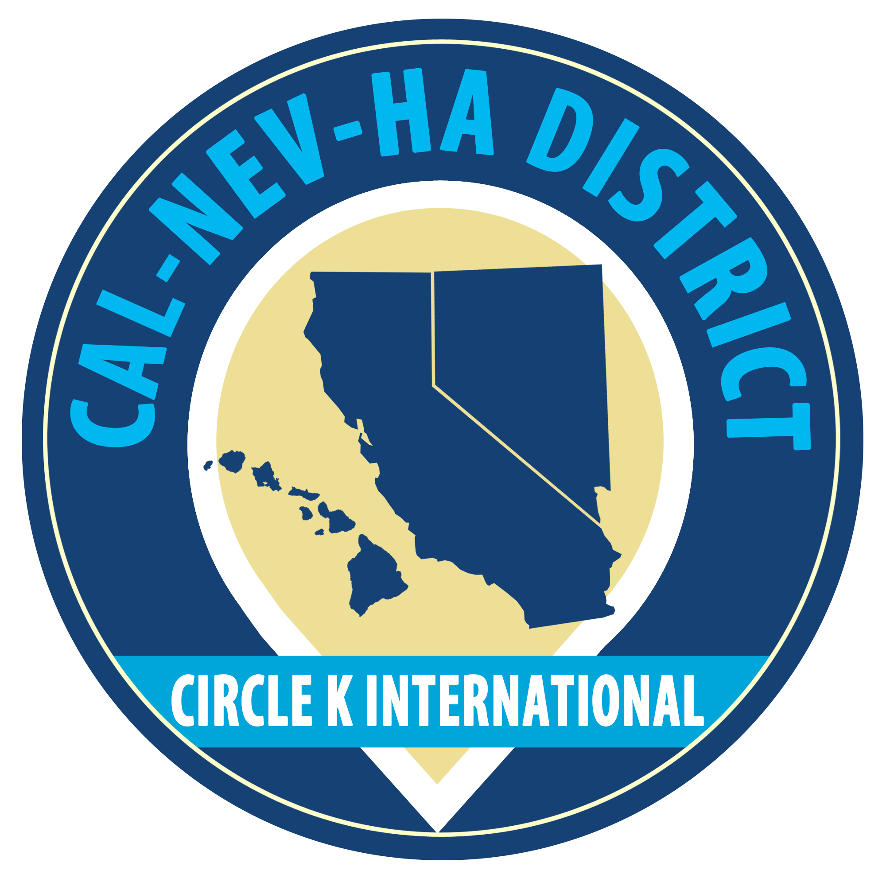

Circle K Organizations
Our City
Kiwanis Club of Riverside
Our local Kiwanis Club in Riverside supports both CKI at UCR and the surrounding community.
The Kiwanis Club of Riverside is our sponsoring organization as well as our go-to for all things Kiwanis!
Our Division
Desert Oasis
Within the CAL-NEV-HA District we are part of a smaller division called Desert Oasis (D.O.), which
consists of six schools:
CSU San Bernardino
College of Southern Nevada
Crafton Hills College
Norco State College
University of California, Riverside
University of Las Vegas, Nevada*
*UNLV is our sister school.
CSU San Bernardino
College of Southern Nevada
Crafton Hills College
Norco State College
University of California, Riverside
University of Las Vegas, Nevada*
*UNLV is our sister school.

Our District
Cal-Nev-Ha
Our Circle K club at the University of California, Riverside is part of a much larger community.
We are part of the California-Nevada-Hawaii District.
Circle K Int'l
Kiwanis is a group of people that you can rely on for life advice and support.
The Kiwanis family consist of many branches which include: Builder's Club, Key Club, Circle K, Aktion Club and of course Kiwanis. Not only do we have this "family" in all ages and forms but we also have Circle K's all over the world and once you get more involved, it's incredible the amount of people from all places you get to meet so come join!
The Kiwanis family consist of many branches which include: Builder's Club, Key Club, Circle K, Aktion Club and of course Kiwanis. Not only do we have this "family" in all ages and forms but we also have Circle K's all over the world and once you get more involved, it's incredible the amount of people from all places you get to meet so come join!